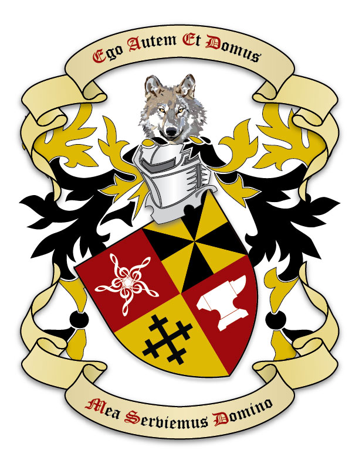

Posted to: The Google+ Heraldry Community
Posted by: Michael Richards
Created on: December 8 2016 at 16:0
Time once again for double check of my blazon. I used to not ask for opinions on this as my own were quite strong, but I have had excellent suggestions from this group and in particular
+
Marc-André Laverdière
on how to improve them. So here is the guy who wanted something Italian for a crest. He picked the Italian Wolf which has very unusual coloring and why I opted for a more realistic crest, even though I usually stay away from that. Anyway here are the arms and below my blazon.
Quarterly Sanguine and Or: 1st 5 Treble Clefs all attached at the base in Mullet Argent; 2nd Gyronny Or and Sable; 3rd a Cross Crosslet Sable; 4th an Anvil Argent. Upon a Helm mantled Sable doubled Or from a Wreath of these Colours is set for a Crest, an Italian Wolf affronte Proper. The motto Ego Autem Et Domus Mea Serviemus Domino (As For Me And My House, We Shall Serve The Lord) to be carried in an Escroll above and below the Shield.

Time once again for double check of my blazon. I used to not ask for opinions on this as my own were quite strong, but I have had excellent suggestions from this group and in particular +Marc-André Laverdière on how to improve them. So here is the guy who wanted something Italian for a crest. He picked the Italian Wolf which has very unusual coloring and why I opted for a more realistic crest, even though I usually stay away from that. Anyway